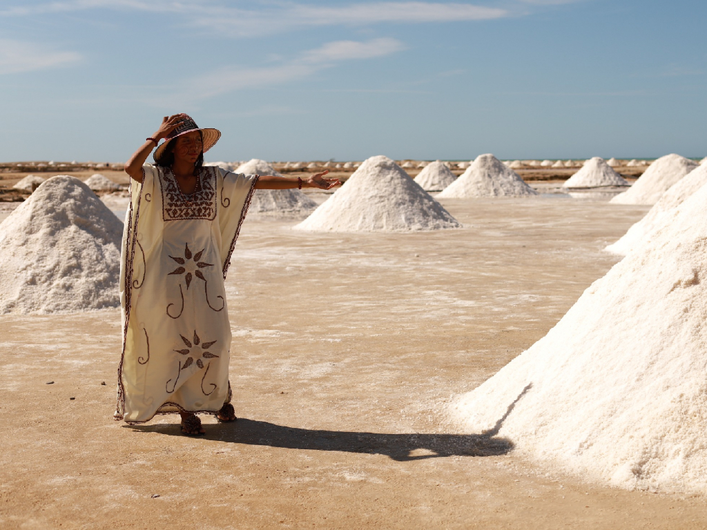

My Travel Experience
This park, located between the departments of Boyacá, Arauca, and Casanare, boasts a wide variety of ecosystems such as Andean forests, páramos, and glaciers, perfect for hiking and enjoying the landscapes
Read more
Latest blogpost

Where To Go
Ciudad Perdida: A destination with a wide variety of climates, ecosystems, and flora and fauna! It should be on your travel list, offering an unforgettable experience. The hike will take you to discover a civilization that has existed for thousands of years.
Read more
What To Do
Ciudad Perdida:If you hike to Ciudad Perdida, you will discover ancient ruins. You could also take a guided tour to learn more about the indigenous cultures.
Read more
Travel Tips
Ciudad Perdida:
You must bring enough water for the hike, as the trail can be challenging and the weather is often hot. You should wear comfortable shoes, since the terrain can be rugged and steep, making the walk even more demanding.
Read more